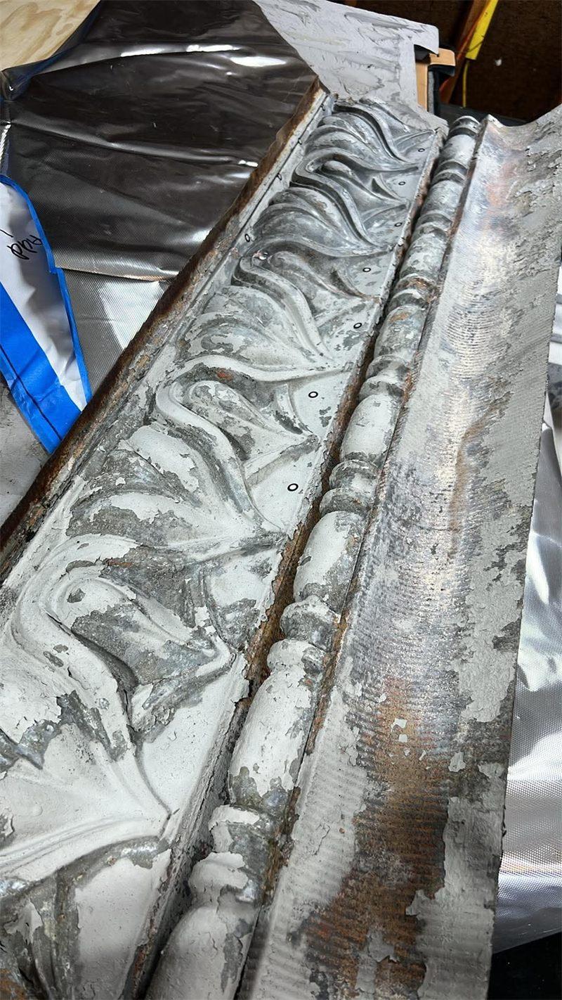
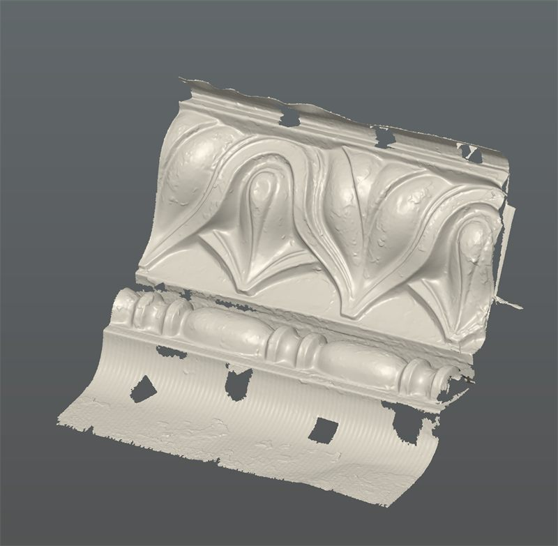
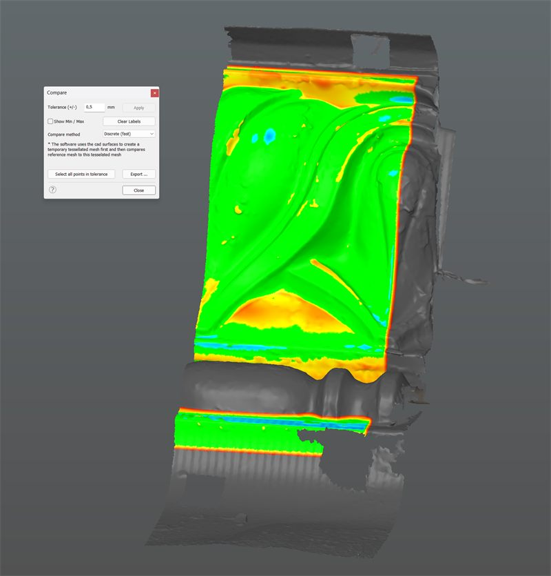
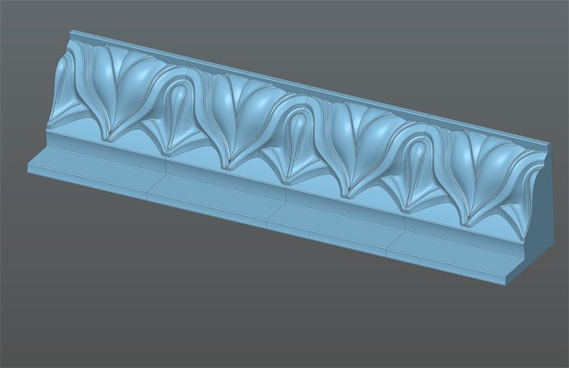

Historic building trims
Ornamental trims from a historic building had to be remanufactured. The damage was too severe to copy or repair the originals, so the trims were fully reverse engineered from 3D scans into clean CAD models ready for CNC milling.
-

Damaged original 01Corrosion and flaking paint had destroyed large parts of the ornament. No drawings existed.
-

3D scan 02The best-preserved sections were 3D scanned. The mesh captures the ornament, but also every dent and missing area.
-

Rebuild & deviation check 03One repeating unit was rebuilt as clean CAD surfaces on the scan and checked against it within ±0.5 mm.
-

Full-length CAD model 04The verified unit was patterned along the profile into a complete model of the full trim.
-

Ready for milling 05The final solid was prepared in Fusion for CNC milling, so new trims match the originals.